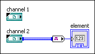

The channel output of a channel control is not wired to the channel input of a channel reader endpoint. In the following example, the channel output of channel 1 is not wired.
To correct this error, you must wire the channel output of a channel control through structures or subVIs to the channel input of a channel reader endpoint or delete the channel control from the block diagram. To find the channel control that returns this error message, click the Show Error button in the Error list window.